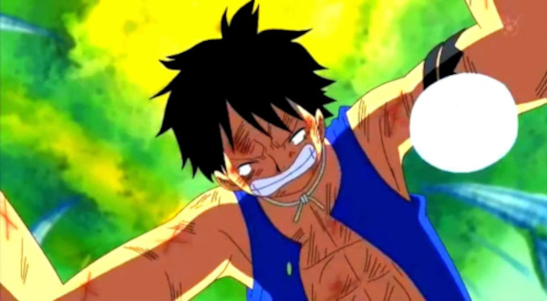
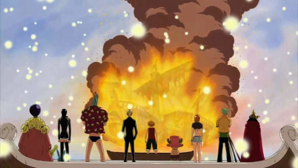
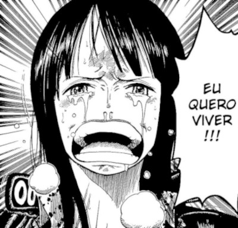
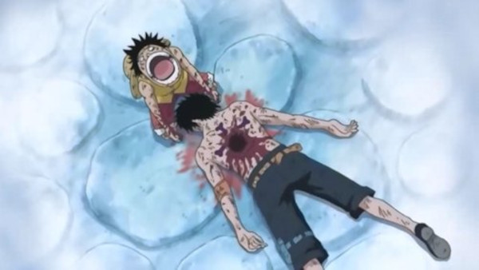

One Piece é uma série de mangá escrita e ilustrada por Eiichiro Oda. Os capítulos têm sido serializados na revista Weekly Shōnen Jump desde julho de 1997, com os capítulos compilados e publicados em 108 volumes tankōbon pela editora Shueisha até abril de 2024. One Piece conta as aventuras de Monkey D. Luffy um jovem cujo corpo ganhou as propriedades de borracha após ter comido um fruto do diabo acidentalmente. Com sua tripulação, os Piratas do Chapéu de Palha, Luffy explora a Grand Line em busca do tesouro mais procurado do mundo, o "One Piece", a fim de se tornar o próximo Rei dos Piratas. One Piece atingiu a marca de mil capítulos publicados na Weekly Shonen Jump em janeiro de 2021, se tornando um dos raros mangás a ultrapassar tal marca.
Os 5 momentos mais Marcantes de One Piece
5. A separação do bando em Sabaody
Episódio 405 , Capítulo 513
Poucos momentos na série vemos Luffy perder completamente para seus inimigos, mas Oda sabe exatamente quando inserir momentos assim para criar reviravoltas chocantes. O impacto de presenciar Luffy e o resto do bando serem encurralados pelo shichibukai Bartholomew Kuma mostrou o quão fracos e despreparados o bando estava para enfrentar o Novo Mundo que os aguardava. Presenciar os membros sumirem um por um nas mãos de Kuma, até a cena que Luffy cai aos prantos por não ter a capacidade de salvar ninguém, torna o capítulo (tanto do mangá quanto do anime, muito bem animado) um dos mais impressionantes até então, deixando o leitor questionando o futuro do bando dali para frente.
4. A despedida de Going Merry
Episódio 312 , Capítulo 430
Nem tudo é para sempre, e em algum momento um companheiro teria que ser deixado para trás. Após passar por tantas aventuras e desventuras, o fiel navio do bando, Going Merry, começa a sentir o impacto de todas as aventuras passadas pelo grupo, sendo impossível de ser navegado devido a quebra da base de sua estrutura. Após Ussop tentar impedir que o barco fosse aposentado pelo grupo, ele dá seus últimos remendos antes de partir de Water Seven. Ao final do resgate de Robin, o bando estava encurralado pelo Buster Call da marinha. Sem chances de Luffy e os outros fugirem dali sem um barco, Going Merry chega para salvá-los, dando seu último suspiro como barco do bando. Após a fuga, não resta mais possibilidade do navio prosseguir, com Luffy queimando o barco como forma de finalmente libertá-lo de sua obrigação. O bando presencia o navio incendiando, ouvindo a voz do navio agradecendo o grupo pelas aventuras que passaram até ali, em uma das imagens mais icônicas e emocionantes de toda a série.
3. Gear 5
Episódio 1071 , Capítulo 1044
Desde o início do mangá/anime, o fruto de Luffy era comumente conhecido como Gomu Gomu no Mi, uma fruta do tipo Paramecia. Os frutos inseridos nessa classificação permitem ao usuário modificar sua estrutura corporal ou, até mesmo, produzir e manipular substâncias. É o caso de Buggy, por exemplo, um personagem que tem o poder de dividir seu próprio corpo em várias partes.
Ao contrário do que se acreditava, eventos recentes do arco do País de Wano revelaram um surpreendente segredo por trás da história da Akuma no Mi do Chapéu de Palha que é, na verdade, a Hito Hito no Mi, Modelo: Nika", uma fruta do tipo Zoan mítica. No centro de todo esse mistério está a grande transformação, momento no qual Luffy finalmente assume uma de suas formas mais poderosas (e temidas pelo Governo Mundial) — Nika— Deus do Sol e detentor do poder mais ridículo do mundo.
2. “Eu quero viver!”
Episódio 278 , Capítulo 398
Após se entregar para a Marinha ao tentar poupar o bando do chapéu de palha do mesmo destino que a aguardava, Robin chega na ilha de Ennies Lobby para sua execução, sendo seguida pelo bando capitaneado por Luffy. Ao destruírem metade da ilha para encontrarem sua companheira, Robin se depara com Luffy e seus amigos parados diante dela, esperando apenas que ela pedisse ajuda dos seus companheiros para salvá-la do trágico destino. Intercalando com um dos flashbacks mais tristes, vemos o motivo de Robin ser perseguida desde criança, sendo parte de uma tribo que guardava a verdade por trás dos poneglyphs e do século perdido, algo que o governo mundial tenta esconder do resto mundo. Após realizar a importância do bando em sua vida e a determinação de Luffy em salvá-la, Robin grita para o bando e profere as palavras que a libertariam dali. “Eu quero viver!” é definitivamente um dos momentos mais fortes da série, em um arco catártico, bem planejado e intenso, que dificilmente será superado.
1. A morte de Portgas D. Ace
Episódio 473 , Capítulo 574
A busca de Luffy para salvar Ace é um dos momentos mais importantes de One Piece, e o resultado é uma cena que entrou para a história não só do mangá, mas do gênero. Além de representar um momento de separação do chapéu de palha e o resto do grupo, que precisava individualmente encontrar forças e treinar para se reunir novamente e enfrentar o que estava por vir na segunda metade da Grand Line, é também o momento onde todas as qualidades da série de Eiichiro Oda brilham, mostrando o quão cuidadoso o autor foi em construir o mundo e uma situação para que, no momento que aquilo ocorresse, impactasse o leitor da maior forma possível.
Ao contrário de muitas histórias que se orgulham de tirar constantemente a vida de personagens importantes, One Piece é o exato oposto, sendo até criticado por poupar muitos personagens ao longo do mangá.
Porém, isso pode ser visto como uma estratégia de Oda em entregar o máximo de impacto quando há uma perda. E isso pode ser visto aqui, quando perdemos um dos personagens mais importantes da série, representando não só uma perda mas uma nova fase na série, com a morte de Ace sendo uma derrota necessária para Luffy crescer e se tornar o homem que um dia virá a ser o rei dos piratas.
